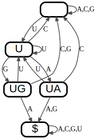
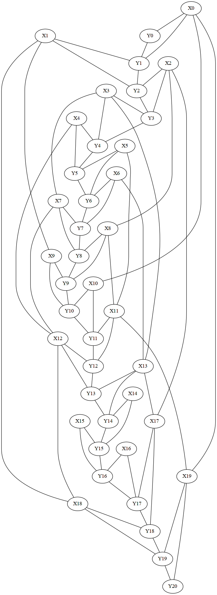
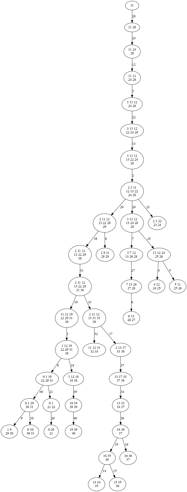

Online resources and software environment
This document is hosted online as Jupyter notebook with precomputed results. Download this file to view, edit and run examples in Jupyter.
We recommend to install all required software using Mamba (or Conda) and PIP.
mamba create -n infrared -c conda-forge infrared jupyter jupytext matplotlib seaborn graphviz
mamba activate infrared
pip install graphviz
mamba deactivate infrared
Start the Jupyter notebook server after activating the environment
mamba activate infrared
jupyter notebook
The original sources are part of the Infrared distribution and hosted on Gitlab (in Jupytext light Script format).
Enforcing and forbidding sequence motifs by finite deterministic automata
We showcase an Infrared feature network model that forbids (or enforces) the occurrence of any (respectively one) of several given input motifs in randomly generated sequences. The Infrared model is be based on a finite automaton that we construct from the input motifs/words.
For example, let's generate sequences that avoid the stop codons or any of three restriction sites of EcoRI, BamHI, and HindIII
Sigma="ACGU"
stop_codons = ["UGA", "UAG", "UAA"]
restriction_sites = ["GAAUUC",
"GGAUCC",
"AAGCUU"
]
words=stop_codons
import infrared as ir
from collections import defaultdict
A Deterministic Finite Automaton (DFA) is a \(5\)-tuple \((\mathcal{Q},\Sigma,\delta,q_0,\mathcal{Q}_F)\) with
- Finite set of states \(\mathcal{Q}\);
- Finite set of symbols \(\Sigma\);
- Transition function \(\delta:\mathcal{Q}\times\Sigma\to\mathcal{Q}\);
- Initial state \(q_0\in\mathcal{Q}\);
- Set of final, accepting states \(\mathcal{Q}_F\subset\mathcal{Q}\).
Construction of an Aho-Corasick automaton
We construct a specific DFA, called Aho-Corasick automaton, that accepts strings that contain one of several given words. The general idea of this construction is that the automaton contains one state for every true word prefix; in addition there is a terminal state $. Then, we introduce transitions from states so that the automaton always remembers the longest infix up to current position that can still be extended to an accepted word.
def maxoverlap(s,t):
for i in reversed(range(min(len(s),(len(t)))+1)):
if s[-i:] == t[:i]:
return i
return 0
def construct_automaton(words, Sigma):
states = set()
for w in words:
for i in range(0,len(w)):
states.add(w[:i])
states.add("$")
delta = defaultdict(dict)
for state in states:
if state=="$":
for c in Sigma:
delta[state][c]="$"
continue
for c in Sigma:
s = state+c
if s in words:
delta[state][c] = "$"
continue
if s in states:
delta[state][c] = s
continue
xs = []
for state2 in states:
k = maxoverlap(s,state2)
xs.append((state2,k))
if len(xs)>0:
maxk = max(x[1] for x in xs)
maxstates = [x[0] for x in xs if x[1]==maxk]
state2=min(maxstates, key=lambda x: len(x))
delta[state][c]=state2
return (states,delta)
Construct for specific instance and visualize
As preparation step, to finally forbid the restriction sites, we are first construting a DFA that recognizes them.
automaton = construct_automaton(words, Sigma)
snum = len(automaton[0])
print(f'{snum} states')
5 states
import graphviz
def draw_automaton(automaton):
states,delta = automaton
G=graphviz.Digraph(engine="dot",
graph_attr=dict(),
node_attr=dict(fontsize="22pt", fontname="Helvetica",
penwidth="3.0", fontcolor="black",
shape="rectangle", style="rounded",
height="0.4", margin="0.03"),
edge_attr=dict(color="gray30", penwidth="1.5", arrowsize="0.8"))
for state in states:
G.node(state)
for src in delta:
tgts = defaultdict(list)
for c in delta[src]:
tgt = delta[src][c]
tgts[tgt].append(c)
for tgt,c in tgts.items():
G.edge(src,tgt,label=','.join(sorted(c)))
return G
draw_automaton(automaton)

Automaton feature network
We 'implement' the automaton as Infrared model, by modeling the state at each position by a variable (whose value is the state index) and the transitions by constraints. For use in our model, we define a constraint to express the transition function \(\delta\). To express our model in Infrared, states (and characters) have to be encoded as integers. Thus, before we can express the model, we translate our automaton (including its transition function) to this encoding.
ir.def_constraint_class('Trans',
lambda i,delta,var: var([('X',i),('Y',i),('Y',i+1)]),
lambda xi,yi,yip1,delta: yip1 == delta[yi][xi])
def automaton_to_int_encoding(automaton, Sigma):
"""Convert automaton to an integer encoding
Returns:
(revintstates, intdelta), where
* revinstates represents the states as a mapping from state labels to integers
* intdelta is the delta function on integers for states and characters (w.r.t. Sigma)
"""
states, delta = automaton
states=list(states)
termidx = states.index('$')
states[termidx],states[-1] = states[-1],states[termidx]
numstates = len(states)
revintstates = {state:x for x,state in enumerate(states)}
intdelta = defaultdict(dict)
for src in delta:
for c in delta[src]:
tgt = delta[src][c]
intdelta[revintstates[src]][Sigma.index(c)] = revintstates[tgt]
return revintstates, intdelta
def automaton_model(n, Sigma, automaton, model=None, negated=False):
"""
Construct automaton model
Args:
Sigma: alphabet
automaton: actually, only the pair of states and delta of an AC automaton, implicit start at ''
negated: if False, choose '$' as accepting; if True, every other state
model: if this is not None, extend the given model by the automaton.
Given models must define n variables X_i, which encode alphabet characters.
Returns:
The constructed model
"""
Sigma = sorted(Sigma)
if model is None:
model = ir.Model()
model.add_variables(n, len(Sigma), name='X')
states, delta = automaton_to_int_encoding(automaton, Sigma)
q0 = states['']
qf = states['$']
numstates = len(states)
model.add_variables(1, (q0,q0),'Y')
if not negated:
model.add_variables(n-1, numstates ,'Y')
model.add_variables(1, (qf,qf), 'Y')
else:
model.add_variables(n, (0,qf-1) ,'Y')
model.add_constraints( Trans(i,delta,model.idx) for i in range(n) )
return model
Model for our example
Construct the model for our example input words and use it to generate (uniformly drawn) sequences that avoid the input words!
n=100
def a_to_seq(assignment, n, Sigma):
return "".join([Sigma[i] for i in sample.values()[:n]])
model = automaton_model(n, Sigma, automaton, negated=True)
generate sequences and test whether they contain any input word (if above negated=True, then they must not occur; otherwise one of them must occur)
sampler = ir.Sampler(model)
for _ in range(10):
sample = sampler.sample()
seq = a_to_seq(sample,n,Sigma)
print(seq)
for w in words:
if w in seq:
print(f" {w} occurs")
GAGGUACAAAGUGCUCUACCUCAGUCAUUAUCACGAUCUGGUAUACUACCCACCGAGUGUCAAAUGUUCCUGGACUGGGGGAUCGUUGCGGGCGUAUAUC
CCAAGAAGGACACGAACUCCAGGUUACACAUCAAUUCUGGCUAUCUUCUCAGGCGGCACUGUUUGCCACGAGAUUGUCCUACGAUCGGGAAGACGAGCCC
GGUUCCCGGCAACCCACGGAUCGUUCCACGGGAAGGAAUUUCACGCGGUUACUUGUAUUCAUAUGGCGCACGCCACCUUACGCUUAUUUCUUCGUGCCCA
ACUGCCAGAAAUUGCAGGAGUGGGGCCACCUGCCUCCAAUCGGUGUUCAGUCCACCUUCCGGCACAAGAGUCGACUUACACCUUCUCAAUCGCGUGCGAG
CACGGUUCAGUCGGAACACUGGCUCACACCUUAUGGGAAAGAAACACUUUCGACUUUGCUCCCAUCCCCGGCAAAACGAAUUGGAUCGGUUUGGCCGACC
UGGGCUCUCCCCAUCUGGCCUACAUUCAUCACUGCAAGCUGUGCGAUCAGGCAAUGUCUUAUCCUUUUAUUCCGCGACCAAGACUCGCGUCCAGCCUUUG
CCAAAUUACGUCUUUACCGUGGAACGAAGGAUUUUUACCAAUGGCGAGGUUCUUCGCAAUGCGGGCGGAGGACCCAGGCAGCCGCGCACGCAGCCCGUGG
CAGCACCCAAUAUACUACUUCUACGUCGCAAGAUCACGGAAGAUCAGUCCGUAUGGCAUCUGCAAUUCUAUCCAGAAACGGCGCAAACGUUCCUAUUUCA
GGUCGUGGACAUUCAGUGGUCAGUUCGCCGACCGACUUUGUCCUUUUUGGACACGUACAAAGGACGUAUGUGGUGUACUGCAACACUACAAAAGAAACAC
GGUGCCGCUUCGCAGCCGGGAGCUGGAAGGUGCUGCGGUUACACCAGAAGUAUACCCCUCCACUGUCAAAAAGAUCGUUGUGGCUGGAACCGCAUCUGUG
APPENDIX
Combination with multi-target design
from infrared import rna
toy_targets = [
"((((...))))(((...)))",
"((((((.....)))...)))",
"......(((..)))......",
]
benchmark_targets = [
'((((.((....)).)))).((.(((.((((.....(((..((((((.((..(((.(.....).)))..)).)).))))..)))..)))).))).))....',
'..(((((.....(((.(((((((.....))))..))).))).....)))))..((((((((((...))).)....))))))...((((((....))))))',
'......(((((.....(((...(((.((.((.(((....((......))...))).)).)))))..))).............))))).((((...)))).'
]
targets = toy_targets
def construct_design_model(targets):
seqlen = len(targets[0])
model = ir.Model()
model.add_variables( seqlen, 4, name='X' )
for i,target in enumerate(targets):
bps = rna.parse(target)
model.add_constraints( rna.BPComp( i, j ) for ( i, j ) in bps )
model.add_functions( [ rna.BPEnergy( i, j, False )
for ( i, j ) in bps ], group = f'bpenergy{i}' )
model.add_feature( f'E{i}',
f'bpenergy{i}',
lambda sample, i=i: RNA.energy_of_struct( rna.values_to_seq( sample.values() ),
targets[i] )
)
model.add_functions( [ rna.GCCont( i = i ) for i in range(seqlen) ], group = 'gc' )
model.write_graph('dependency_graph.dot', True)
ir.dotfile_to_pdf('dependency_graph.dot')
return model
model = construct_design_model(targets)
sampler = ir.Sampler(model)
print(f'Treewidth(design): {sampler.treewidth()}')
n= len(targets[0])
print(f'Length: {n}')
model = automaton_model(n, Sigma, automaton, negated=True, model=model)
Treewidth(design): 1
Length: 20
from IPython.display import Image
import re
filename = 'dependency_graph.dot'
model.write_graph(filename, True)
ir.dotfile_to_png(filename)
filename = re.sub(r"dot$","png",filename)
Image(filename=filename,width=400)

Compute the tree decomposition - compare different strategies
Minimize tree width
Here, we additionally set a fixed number of iterations
import treedecomp
from treedecomp import NXTreeDecompositionFactory
weights = [d.size() for d in model.domains]
sampler = ir.Sampler(model,
td_factory=NXTreeDecompositionFactory(iterations=100,
adaptive=None,
))
print(f'Treewidth(design+automaton): {sampler.treewidth()}')
td=sampler.td
print(weights)
bagweights = treedecomp._bagweights(td.bags, weights)
print(bagweights)
print(f"{float(sum(bagweights)):0.2}")
Treewidth(design+automaton): 7
[4, 4, 4, 4, 4, 4, 4, 4, 4, 4, 4, 4, 4, 4, 4, 4, 4, 4, 4, 4, 1, 4, 4, 4, 4, 4, 4, 4, 4, 4, 4, 4, 4, 4, 4, 4, 4, 4, 4, 4, 4]
[65536, 4096, 16384, 16384, 65536, 65536, 16384, 16384, 4096, 1024, 1024, 1024, 1024, 1024, 1024, 1024, 1024, 1024, 1024, 256, 256, 256, 256, 256, 256, 256, 256, 64, 64, 64, 64, 16, 64, 64, 4, 16, 64, 256, 1024, 4096, 16384]
3e+05
Minimize tree width after 'collapsing' corresponding variables
This is useful to more easily argue worst case bounds in the context of series of corresponding variables with different domain sizes (here, for general FDA, this is the case for X_i and Y_i, which correspond to each other). In practice, this often seems to be significantly worse.
Note that domain sizes happen to be almost uniform for the stop codon automaton.
import treedecomp
from treedecomp import NXTreeDecompositionFactory
n= len(targets[0])
weights = [d.size() for d in model.domains]
sampler = ir.Sampler(model,
td_factory=NXTreeDecompositionFactory(iterations=100,
adaptive=None,
join = lambda i,j: i<n and j==i+n,
))
print(f'Treewidth(design+automaton): {sampler.treewidth()}')
td=sampler.td
print(weights)
bagweights = treedecomp._bagweights(td.bags, weights)
print(bagweights)
print(f"{float(sum(bagweights)):0.2}")
Treewidth(design+automaton): 11
[4, 4, 4, 4, 4, 4, 4, 4, 4, 4, 4, 4, 4, 4, 4, 4, 4, 4, 4, 4, 1, 4, 4, 4, 4, 4, 4, 4, 4, 4, 4, 4, 4, 4, 4, 4, 4, 4, 4, 4, 4]
[16777216, 1048576, 1048576, 16777216, 1048576, 65536, 65536, 1048576, 1048576, 262144, 16384, 16384, 4096, 4096, 4096, 64, 4, 16, 64, 256, 1024, 4096, 16384, 65536, 262144, 1048576, 4194304, 4194304, 16384, 1024, 1024, 1024, 262144, 262144, 262144, 262144, 4096, 4096, 262144, 16384, 262144]
5.1e+07
Optimize weight over tree decompositions with low tree width (from min-fill-in)
Experimental feature. Finally, it would be desirable to optimize weight, i.e. the sum over the products of domain sizes per bag, over all possible tree decompositions. This strategy nevertheless typically improves evaluation-time over the non-weighted strategy in the context of non-uniform domain sizes.
import treedecomp
from treedecomp import NXTreeDecompositionFactory
weights = [d.size() for d in model.domains]
sampler = ir.Sampler(model,
td_factory=NXTreeDecompositionFactory(iterations=100,
adaptive=None,
objective="weight",
weights=weights))
print(f'Treewidth(design+automaton): {sampler.treewidth()}')
td=sampler.td
print(weights)
bagweights = treedecomp._bagweights(td.bags, weights)
print(bagweights)
print(f"{float(sum(bagweights)):0.2}")
Treewidth(design+automaton): 7
[4, 4, 4, 4, 4, 4, 4, 4, 4, 4, 4, 4, 4, 4, 4, 4, 4, 4, 4, 4, 1, 4, 4, 4, 4, 4, 4, 4, 4, 4, 4, 4, 4, 4, 4, 4, 4, 4, 4, 4, 4]
[65536, 16384, 16384, 65536, 16384, 16384, 16384, 4096, 16384, 4096, 1024, 1024, 1024, 1024, 1024, 1024, 1024, 1024, 1024, 256, 256, 256, 256, 256, 256, 256, 256, 64, 64, 64, 64, 64, 64, 16, 4, 16, 64, 256, 1024, 4096, 16384]
2.7e+05
filename="treedecomp"
sampler.plot_td(filename,'png')
Image(filename=filename+".png",width=600)

for target in targets:
print(target)
for sample in (sampler.sample() for _ in range(10)):
seq = a_to_seq(sample,n,"ACGU")
print(seq)
((((...))))(((...)))
((((((.....)))...)))
......(((..)))......
GUACGUCGUACGUGCGUUAU
GCGCAUCGCGCGUGGAACGU
GUGUGUCGUACGUGGGUCAU
UGUGCAGCAUGUGCAACGCG
UAUGUGGCGUGCGUGGUAUG
UGUACAGUACGUGUCAGAUG
GUAUACUAUGUGUAUCAUGC
UGUGCAGUGCAUGUACCGUA
GUGUGUUGUGCAUGUGCUAU
GUGUGUUAUGUGUGUAUUAU
 1.9.7
1.9.7